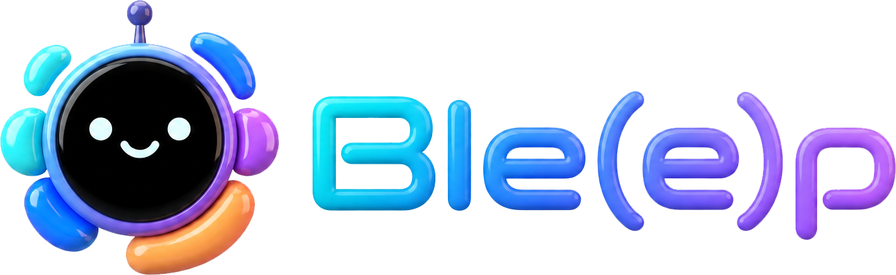
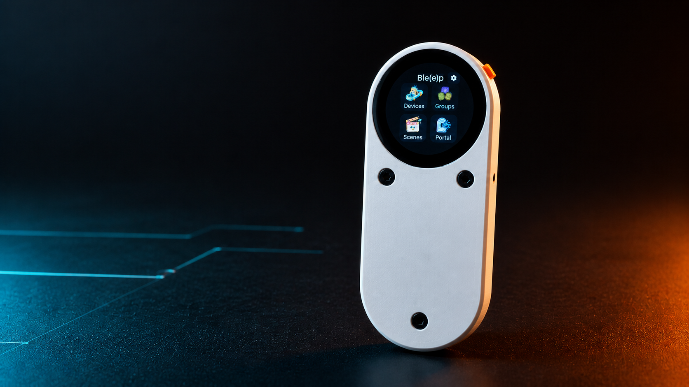
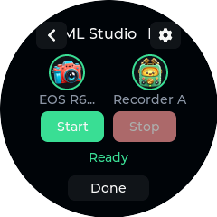
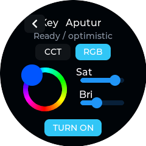
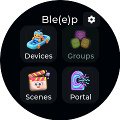
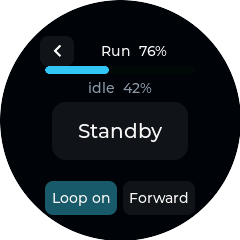
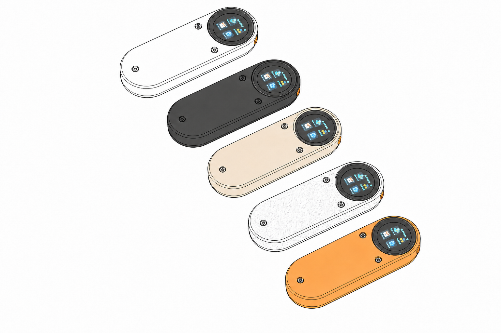

Your studio stays yours.
Device links, state, and sequences run on the controller. Normal operation doesn’t depend on somebody else’s cloud.


Open firmware / active development
Ble(e)p adds open, local-first control and automation to studio gear. Trigger cameras, set lights, run motion, start recorders, and coordinate them in sequences—from one physical panel.
ESP32-C3240 × 240 TOUCHBLE + WI-FI
Most studio gear is designed to work alone. When remote control exists at all, it is usually trapped in a single-purpose app or proprietary protocol.
Device links, state, and sequences run on the controller. Normal operation doesn’t depend on somebody else’s cloud.
Ble(e)p separates a packet being delivered from a camera recording, a light changing, or hardware actually moving.
Protocol evidence, isolated integrations, and host tests make the platform useful beyond one manufacturer—or one panel.
Operate one device from a purpose-built screen, or prepare an entire sequence and start the room with one press.

Prepare together. Trigger once.
Coordinate recording, lighting, motion, waits, and Home Assistant actions in a repeatable order. Generated Stop runs the safe inverse.

One language for the look.
A shared control surface exposes only what each fixture can do: power, brightness, CCT, tint, or RGB—without hiding brand-specific transport beneath it.

Record across ecosystems.
Control verified paths for Canon, Insta360 X5, DJI Osmo, GoPro, and a Google Pixel 9—while keeping unverified models clearly labeled.

Put motion on your mark.
Specialized Shark Nano II controls keep keypoints, positioning, speed, direction, loops, and run progress close at hand.

ROUND TOUCH UI PHYSICAL TRIGGER OPEN HARDWARE TARGETBle(e)p currently runs on the ESP32-C3 CrowPanel 1.28-inch round display. Flash the full firmware, add your devices on-panel, and shape the controller around your own studio.
Ble(e)p is active firmware development, not a finished consumer product. Stable paths and experiments live side by side; exact support notes tell you which is which.
See compatibility matrixBluetooth Links Everything, Eventually, Probably.